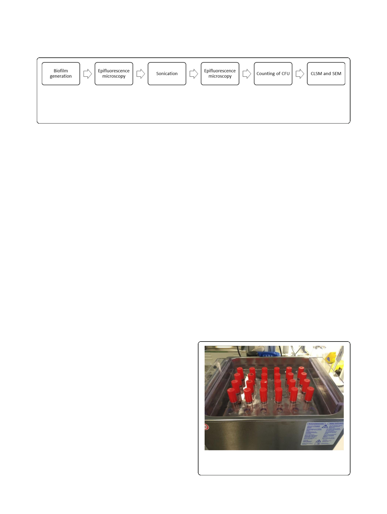

Sandbakken et al. Journal of Orthopaedic Surgery and Research (2020) 15:522
Page 3 of 9
Fig. 1 A flowchart of the experimental design describes the steps performed with 24-h biofilm. 46 steel plates with established 24-h biofilm were
subjected to epifluorescence microscopy before and after sonication. The number of CFU in the sonication fluid was calculated. Confocal laser
scanning microscopy (CLSM) was applied to 4 of the 46 specimen and scanning electron microscopy (SEM) to 2 of the 46 specimen for
confirmation of possible presence of coccoid bacteria after sonication. 2 additional positive controls, which were not sonicated, were visualized
with SEM to see that the preparation did not affect the biofilm
nutrition every 24 h. The 2 negative controls were proc-
essed parallel to specimens, one incubated solely in
TSB-Glu and the other underwent microscopy directly
from the sterile packaging.
Sonication of steel plates
A BactoSonic® sonicator (Bandelin electronic GmbH &
Co. KG) was operated according to the manufacturer’s
operating instructions. The bath was filled 2/3 with
water and 95 ml Tichopur TR3 added before degassing
at maximum effect for 15 min. The overall efficacy was
controlled with the “foil test” followed by a detailed
evaluation using a Bruel & Kjær 8103 hydrophone (see
Additional file 1 for description).
The test tubes containing 10-mL sterile saline and one
steel plate with the investigated surface facing upwards
were sonicated at 100% effect (800 W) for 5 min at room
temperature (Fig. 2). The sonication fluid was then aspi-
rated and transferred to sterile bottles before serial dilu-
tion and inoculation on blood agar plates.
Quantification of bacteria before and after sonication
Ten microliters of undiluted final rinsing fluid and 10
μL of sonication fluid diluted 1:10 and 1:100 were seeded
onto blood agar plates for counting of CFU. Pilot studies
(data not shown) demonstrated adequate removal of
planktonic bacteria during prior rinsing steps.
Staining and visualization of bacteria with CLSM after
sonication
Two sonicated plates from the 24-h experiment and one
plate from the 72-h experiment, with remaining biofilm as
demonstrated with epifluorescence, were subjected to
CLSM. An inverse confocal laser scanning microscope
LSM510 (Carl Zeiss AG) equipped with a C-Apochromate
63x/1.2 water objective was used for confirmation of bio-
film embedded bacteria. The Cyto 9 dye and propidium
iodine component of the viability kit was excited by 488-
nm laser line from a 30-mW Argon laser and detected
using the filters BP 505–530 nm and LP 615 filter, respect-
ively. One Airy unit was used for both channels to keep
high signal-to-noise ratio. Z-stacks of biofilm data were
rendered as 3D-images with Imaris-Microscopy Image
Analysis Software, Oxford Instruments (version 8.2.1).
Preparation for SEM after sonication
Two of the 46 sonicated plates with remaining biofilm
and 2 positive controls were fixed with a solution of
2.5% glutaraldehyde with 2% paraformaldehyde and
0.075% Ruthenium Red in 0.1 M Hepes buffer for 4 h at
room temperature, washed in 0.1 M Hepes buffer, and
subsequently dehydrated using increasing ethanol con-
centrations (10, 25, 50, 70, 90, 2 × 100%), for 5–10 min
Staining and visualization of bacteria with
epifluorescence microscopy before and after sonication
Staining of the biofilm was obtained with LIVE/DEAD ™
BacLight ™ Bacterial Viability Kit (Thermo Fischer Scien-
tific, L7012) according to the manufacturer’s protocol. The
plates were placed with the surface to be investigated facing
downwards onto the object glass with an integrated coord-
inate system (Ibidi μ-Slide 8 Well Grid 500, uncoated).
An inverted EVOS™ FL Auto 2 Imaging System enabled
visualization of the entire surface. Gain and time of expos-
ure were adjusted to avoid picture saturation and kept
constant throughout the experiment. Staining was re-
peated and imaging performed with identical settings after
the sonication procedure to visualize remaining bacteria.
Fig. 2 Steel plates were sonicated in standard glass test tubes in a
customized stand for correct and standardized positioning in
the bath